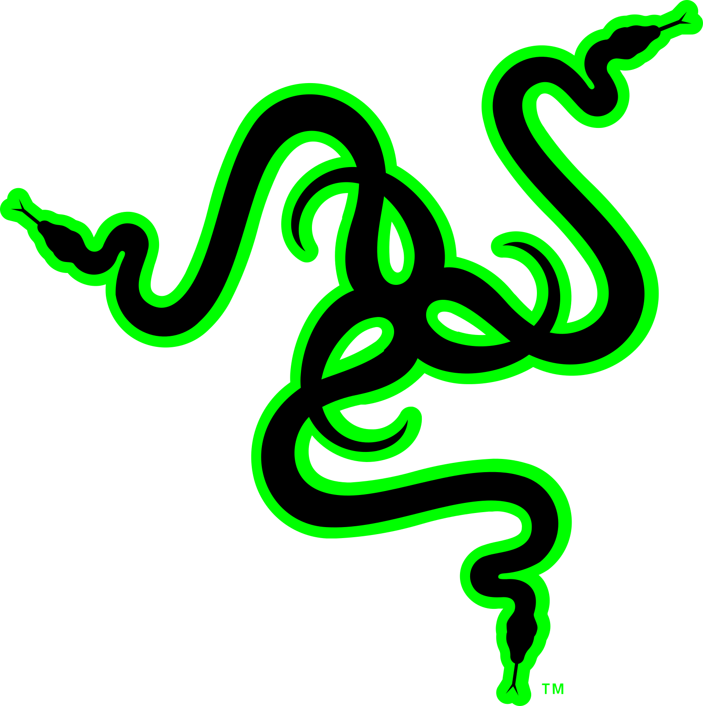
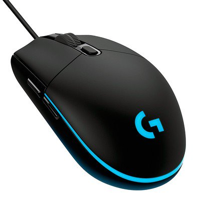

Como esse é um grande mercado atualmente, várias empresas se especializaram no assunto, construindo seus periféricos com cada mais mais qualidade: Um exemplo são as linhas gamers, que valorizam muito o preço dos componentes; Algumas marcas famosas são; Razer, Corsair, Logitech e Redragon por exemplo. Algumas tem são voltadas somente a games, já outras tem tanto periféricos mais simples como mais complexos.

Umas comparação entre preços das linhas:
Um mouse sem fio da Logitech, modelo M170, custa em média 43 reais; Já um mouse da linha gamer da mesma marca, modelo g203, custa por volta de 173 reais
e isso se aplica a teclados também teclado razer cynosa: custa por volta de 180 reais Teclado Razer Blackwidow Chroma: custa por volta de 750 reais